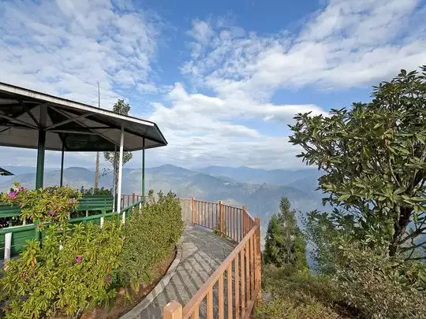
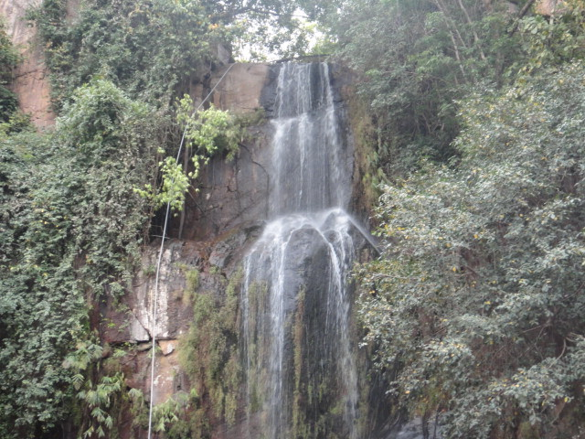

Gridharkuta
Griddhakuta Hill, also known as Vulture Peak, is a Buddhist religious site in Rajgir, BiharThe place is also referred as “Gujjhakut” in Buddhist text. One of the most ancient sites where the Buddha is said to have preached his Lotus Sermon was amongst the favorite meditating place of the Buddha.Even today one can feel the deep sense of spiritual power at the peak that is devoid of any man-made grandeur.
Gurpa-hill
The mountain is said to be the site where the Buddha's disciple, Mahākāśyapa, is said to have died while waiting for the future Buddha, Maitreya to arrive on earth. It is also considered to be one of the tallest peaks in the Gangetic plains. There is a rough steep path that leads to the summit.The hill is known for its natural scenery, forests, waterfalls, sunrise and sunset views, and a temple named Gurupada.
Brahmayoni-hill
Brahmayoni Hill, also known as Brahmajuni Hill, is a sacred Hindu site in the Gaya district of Bihar.The hilltop is a popular tourist spot with views of Gaya town. There are two narrow caves, Brahmayoni and Matruyoni, and temples dedicated to Astabhujadevi and other goddesses.Brahmayoni Hill is the highest hill in Gaya and is located south of the city.The hill is named after a natural fissure on its summit.
Rajgir Hills
The Rajgir Hills are a group of hills in the Nalanda district of Bihar, India that are a significant pilgrimage site for Buddhists, Hindus, and Jains.The hills are associated with the lives of Gautama Buddha, Shraman Bhagwan Mahavira, and the Mauryas and Guptas.The hills are located near the city of Rajgir, and are surrounded by five hills: Ratnagiri, Vipulachal, Vaibharagiri, Songiri, and Udaygiri.
Ramshila-Hills
Ramshila Hill is a sacred hill station in Gaya, Bihar, India that is known for its ancient stone sculptures, temples, and spiritual ambianceRamshila Hill is located on the southeast side of Gaya, a few kilometers from the Vishnupad temples.The hill is considered sacred because it is believed that Lord Rama offered a "pinda" there. The name of the hill is associated with Lord Rama.